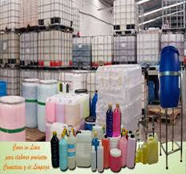

 Limp Team es una empresa familiar argentina de capitales nacionales con mas de 20 años de experiencia en el mercado de la limpieza profesional. Cuenta con un predio de 5000 mts. cuadrados en la localidad de Don Torcuato, provincia de Buenos Aires, zona industrial máxima, a pocos metros de la Ruta Panamericana, desde donde abastece a su amplia red de distribuidores, estratégicamente ubicados, para brindar una respuesta rápida y adecuada a las necesidades de los usuarios. Todos los productos se fabrican con materias primas vírgenes de primera calidad, manteniendo un control continuo en las distintas etapas del proceso productivo, logrando productos que por su calidad y eficiencia satisfacen las más exigentes normas internacionales del mercado profesional. Gracias a las permanentes inversiones en tecnología, automatización y mejora continua en los procesos productivos, tiene la capacidad necesaria para abastecer adecuadamente al mercado interno y continuar expandiéndose a mercados externos. Recientemente se ha terminado la construcción de una nueva nave industrial concluyendo con una de las inversiones planificadas. Es una empresa joven, con desarrollos continuos y espíritu de crecimiento sostenido, avalado por su seriedad y cumplimiento. Hoy en pleno crecimiento, seguimos enfrentando nuevos desafíos para satisfacer sus necesidades futuras.